Furo · Five maps
Overview, spawn approach and landmark. Actual map geometry; software previews approximate lighting and omit WebGL shadows and canvas signs.
SANDYARD
THREE LANES. NO SLOW DAYS.
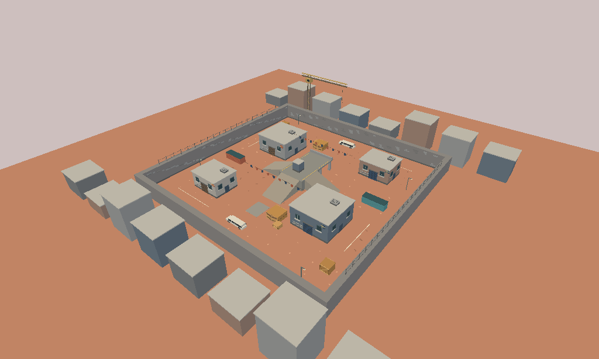
overview · 53 solids · 3 ramps · bounds audit passed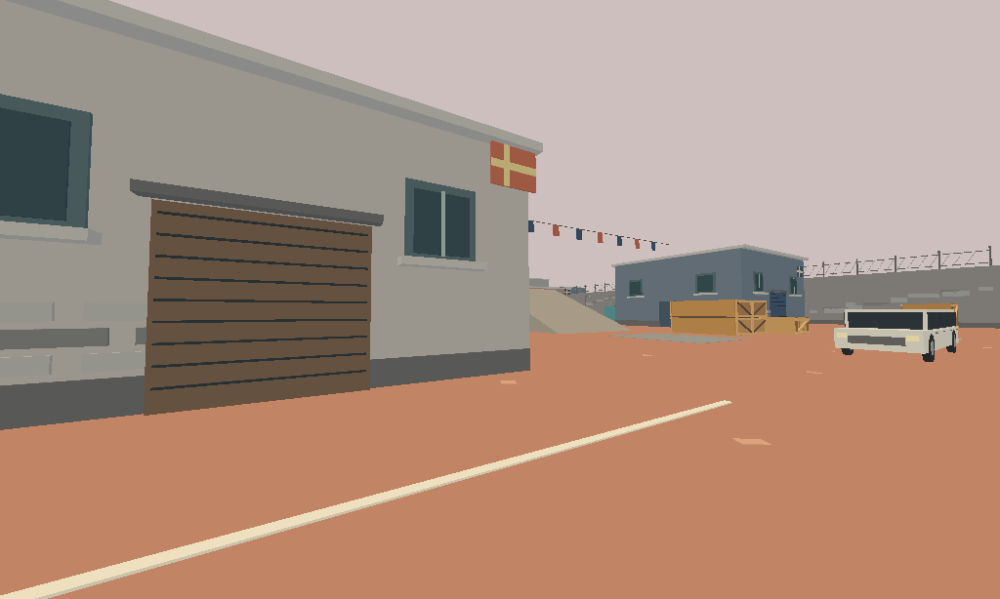
spawn · 53 solids · 3 ramps · bounds audit passed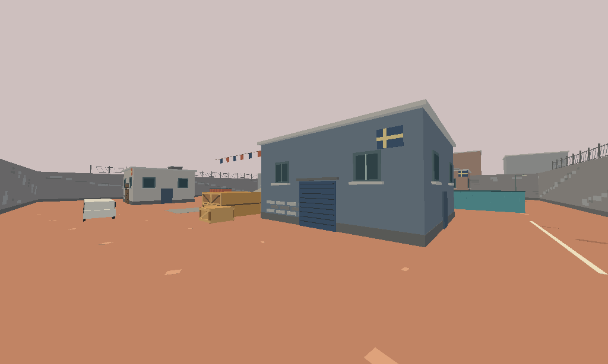
landmark · 53 solids · 3 ramps · bounds audit passed
ORBITAL
REACTOR DECKS. A WORLD BELOW.
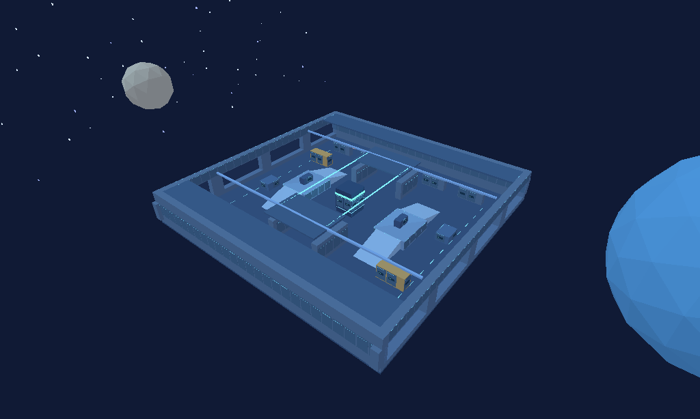
overview · 64 solids · 4 ramps · bounds audit passed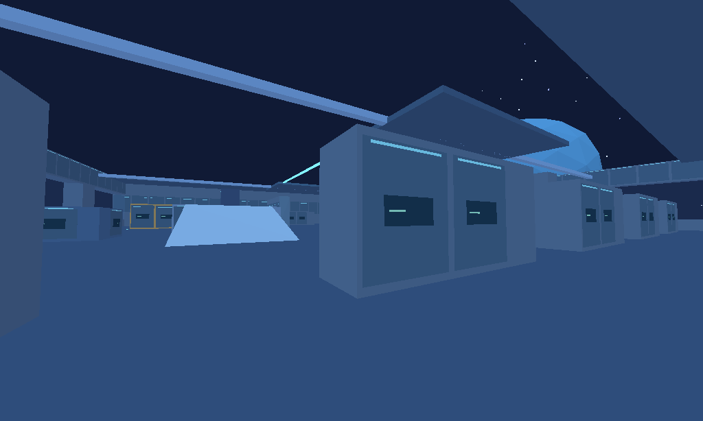
spawn · 64 solids · 4 ramps · bounds audit passed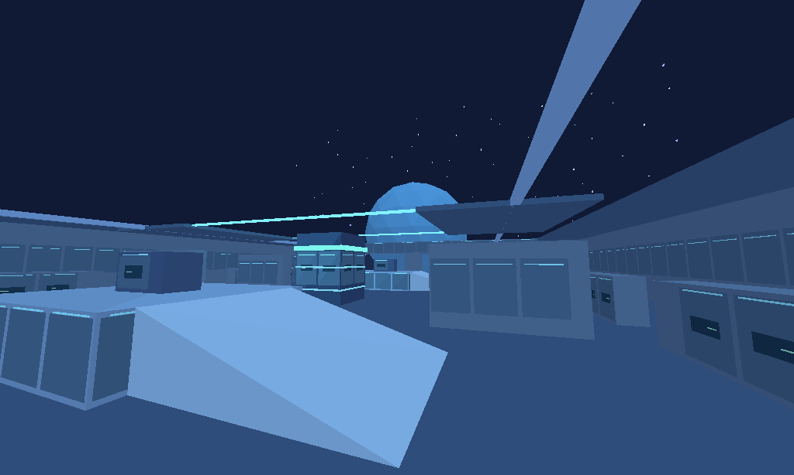
landmark · 64 solids · 4 ramps · bounds audit passed
ABYSS
UNDER PRESSURE. KEEP MOVING.
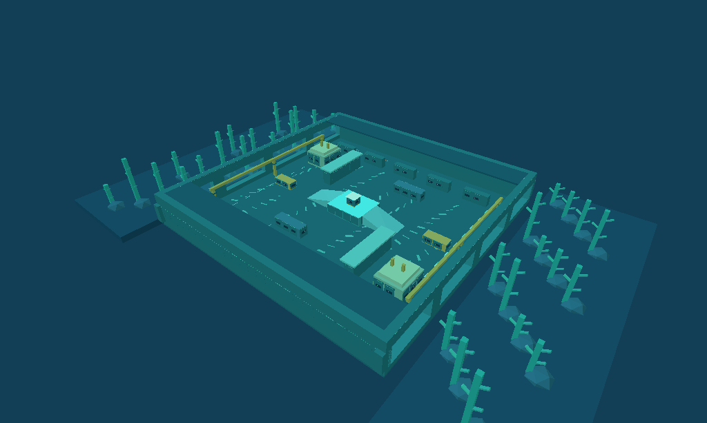
overview · 75 solids · 2 ramps · bounds audit passed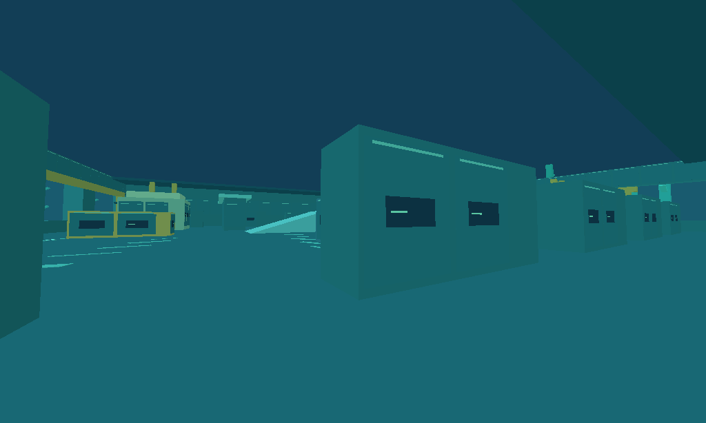
spawn · 75 solids · 2 ramps · bounds audit passed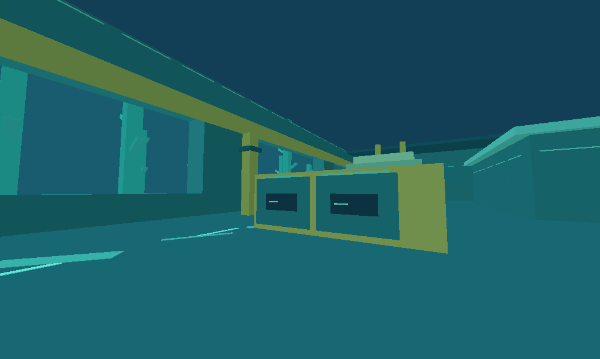
landmark · 75 solids · 2 ramps · bounds audit passed
WILDROOT
OLD RUINS. NEW RIVALS.
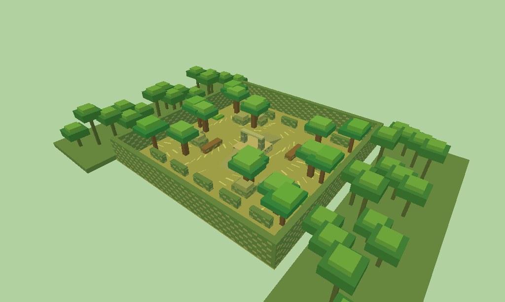
overview · 92 solids · 2 ramps · bounds audit passed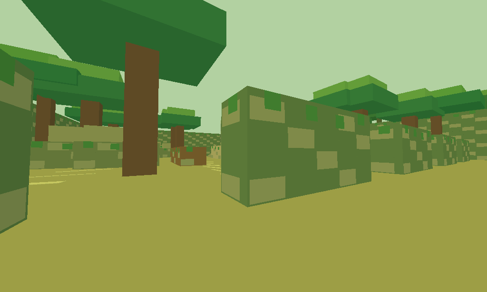
spawn · 92 solids · 2 ramps · bounds audit passed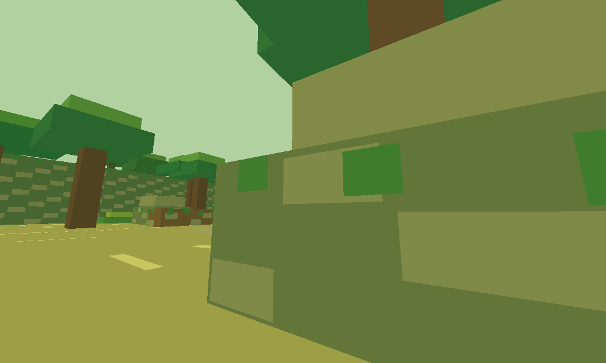
landmark · 92 solids · 2 ramps · bounds audit passed
CATACOMB
TIGHT TURNS. TORCHLIT TOMBS.
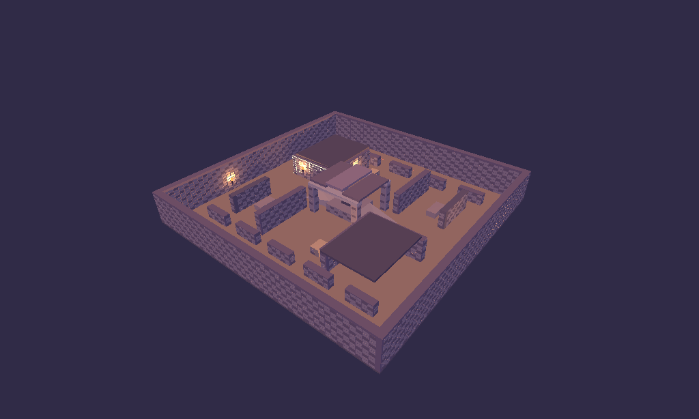
overview · 51 solids · 2 ramps · bounds audit passed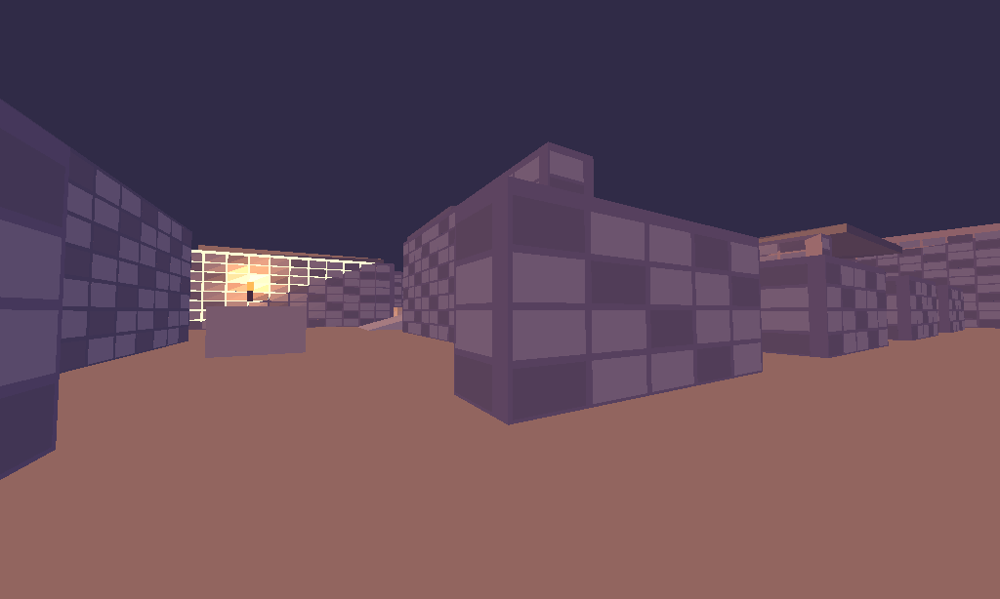
spawn · 51 solids · 2 ramps · bounds audit passed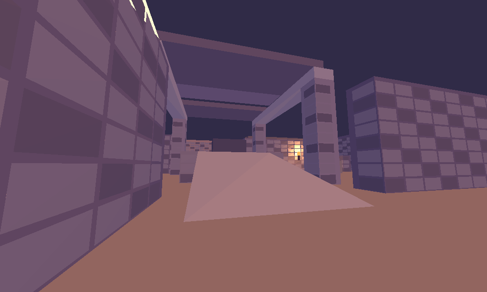
landmark · 51 solids · 2 ramps · bounds audit passed